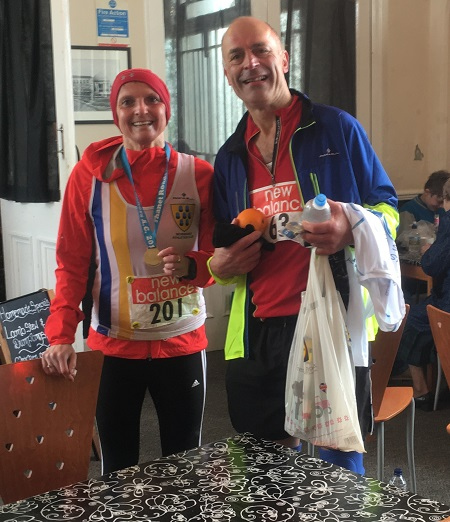

Andrew Milne was twelfth overall, James Graham was first M60, and John Stevens was third M50 as nine SAC runners contested the Thanet 20 on Sunday 5th March. Grace Manzotti was also one of them, and she provided the following report.
"Nine Sevenoaks fairly crazy runners, the 2 Andys, Keith, John, James, Dan, Grazia, Jon and Jenny braved Thanet 20 this morning in lashing rain and strong winds. Braved is the right word for it as I think today being there at the starting line under those conditions was an amazing achievement. Everybody was saying what are we doing here?
We were all there at the starting line trying to keep warm and shelter from the crazy wind and the lashing rain. We were impressed that Dan was running in a vest. I feel this is the hardest race I have ever run. At some point uphill the wind was pushing me backwards, yes backwards, I had to really power up to go forward. And the rain was so hard it hurt my face. I am sure that everybody who is reading this wishes they were there too!
"I ran most of the race with Jon and I am really grateful as running with him really kept me going and it was really nice to have some company and to chat bit as the race wasn't exactly crowded. The race was full (500) and only 257 people got to the end of it. We got to mile 10 in a good time and we though great half done.

At that point my hands were so cold and painful I could not open my gels nor the water bottles and my gloves were drenched, so I am so grateful to Karen who was there to support for giving me her woollen gloves and for opening a gel for me and the water. Thanks Karen! I then felt better, my hands warmed up and the sun almost came out, briefly (well very briefly). At 17 miles I thought "great - parkrun left" and sped up a bit and in the last mile it started raining so hard that I couldn't see the finish line as it was at the side of the road on the grass. Fortunately two marshals pointed it out to me. Jenny said that the marshals were chatting when she came through so they didn't point the finish line out to her and she went past it and had to turn round.
"I think to finish this race in these conditions was a great achievement. We felt that if we could finish today's race we could probably do anything. I think I would like to do this race again in sunny weather, with a bit of sun the views would have been amazing. I really liked running by the sea and we thought that some parts of it were really pretty. Oh and when the wind was pushing us forward that was fab, but it didn't seem to happen that much!"
The SAC results were as follows:
| Pos | Bib | Firstname | Lastname | Cat | CatPos | Sex | SexPos | Club | Chip | Finish |
|---|---|---|---|---|---|---|---|---|---|---|
| 12 | 133 | Andrew | Milne | Open | 7 | M | 12 | Sevenoaks AC | 2:22:13.65 | 2:22:30.65 |
| 23 | 115 | Andrew | Ashlee | MV40 | 10 | M | 23 | Sevenoaks AC | 2:27:25.10 | 2:27:47.40 |
| 24 | 186 | Keith | Brown | MV40 | 11 | M | 24 | Sevenoaks AC | 2:27:46.25 | 2:28:03.70 |
| 25 | 87 | John | Stevens | MV50 | 3 | M | 25 | Sevenoaks AC | 2:29:27.90 | 2:29:49.05 |
| 30 | 257 | James | Graham | MV60 | 1 | M | 29 | Sevenoaks AC | 2:34:04.00 | 2:34:05.40 |
| 44 | 114 | Daniel | Witt | MV40 | 17 | M | 42 | Sevenoaks AC | 2:37:02.65 | 2:37:20.55 |
| 151 | 201 | Grazia | Manzotti | FV45 | 13 | F | 36 | Sevenoaks AC | 3:14:56.35 | 3:15:20.40 |
| 163 | 150 | Jenny | Austin | FV35 | 15 | F | 42 | Sevenoaks AC | 3:16:34.85 | 3:16:53.80 |
| 176 | 63 | Jonathan | Copping | MV60 | 6 | M | 125 | Sevenoaks AC | 3:24:51.00 | 3:25:15.00 |
The full results are here.